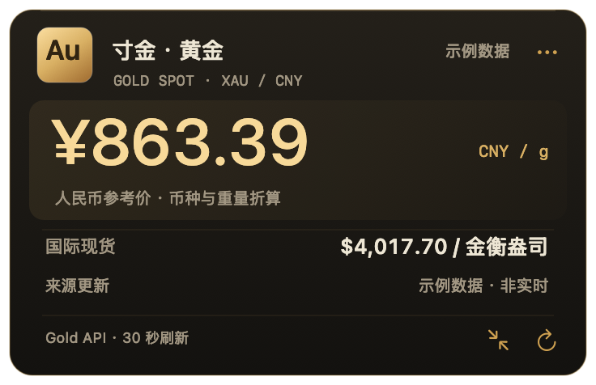
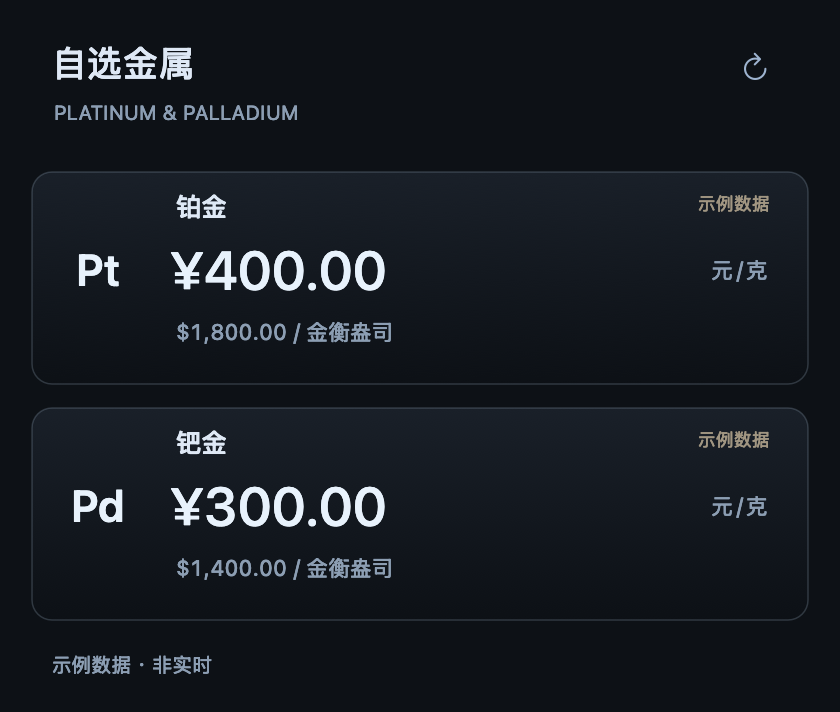

NATIVE MAC APP · UNIVERSAL
行情一瞥，心中有数。
把金银铜的参考行情放到桌面。自由排列，靠近吸附；铂金与钯金，收进一张自选列表。
查看使用方法首发计划 · 人民币 12 元买断
界面示例使用示例价格，不是当前实时行情。
为桌面而生散开时各有位置，
散开时各有位置，
移动时自然同行。
靠近即可磁吸对齐，拖动已吸附的任意成员，整组一起移动。按住 Option，就能单独拆开。完整面板与紧凑行情栏，也能混合排列。
五种金属，一个轻巧应用
黄金与白银常驻，铜按需显示；铂金与钯金在独立的自选列表查看。
币种与单位，说清楚
主价可选美元或人民币。贵金属按金衡盎司或克计价，铜按磅或公吨计价。
旧报价，明确标注
约每 30 秒检查更新。断网保留最近的有效报价，过期时明确提醒；时间跟随系统时区。
01 / 大小皆从容
想看细一点，
也能放得小一点。
完整面板展示主价、来源时间与币种参考。切成紧凑行情栏，把桌面留给手头的工作。每块挂件的显示偏好，都会分别记住。
完整 / 紧凑 · 人民币 / 美元

02 / 多一分视野
常看的留在桌面，
想看的随手展开。
铂金与钯金收纳在独立的自选列表。需要时，从挂件菜单打开；合上之后，桌面依旧留给你最关心的金属。
铂金 · XPT / 钯金 · XPD

CUNJIN FOR MAC
方寸之间，行情在眼前。
原生 macOS 桌面应用，支持 macOS 12 及以上。
兼容 Intel 与 Apple Silicon，无需注册账户。
¥12 / 一次买断
中国大陆首发计划价格，其他地区以当地 App Store 为准。
即将登陆 Mac App Store第三方行情仅供参考，人民币价格包含币种与单位折算，可能与银行、金店及交易所成交价不同。